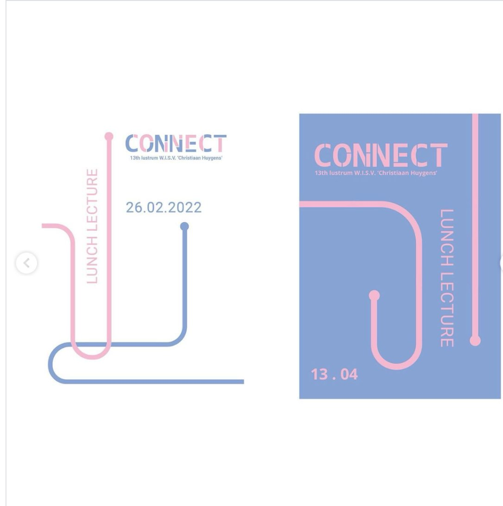

Voor het 65-jarig jubileum van W.I.S.V. "Christiaan Huygens" werd me gevraagd een logo en huisstijl te ontwerpen. Met het thema "connect" ging ik aan de slag, en dit is het resultaat.
Een van de belangrijkste doelen van het project was om het lustrumcomité in staat te stellen het logo zelf aan te passen voor social media, posters en een website. Dit resulteerde in een stijlgids met templates, die zowel flexibiliteit als duidelijke richtlijnen bood om de eenheid van de huisstijl en het logo te bewaken.
